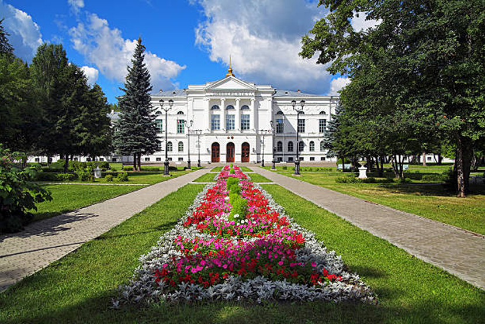

Достопримечательности Томска

Первый Университет в Сибири
Томский государственный университет
Томский Государственный Университет (ТГУ)
Статус: Первый университет в азиатской части России, основан в 1878 году.
Архитектура: Главный корпус — яркий пример эклектики с элементами барокко и классицизма. Здание украшено скульптурами античных богов и муз.
Интересный факт: Перед главным входом установлен памятник основателю университета императору Александру III. Университетский сад («Университетская роща») является любимым местом отдыха студентов и горожан.
К списку
Статус: Первый университет в азиатской части России, основан в 1878 году.
Архитектура: Главный корпус — яркий пример эклектики с элементами барокко и классицизма. Здание украшено скульптурами античных богов и муз.
Интересный факт: Перед главным входом установлен памятник основателю университета императору Александру III. Университетский сад («Университетская роща») является любимым местом отдыха студентов и горожан.